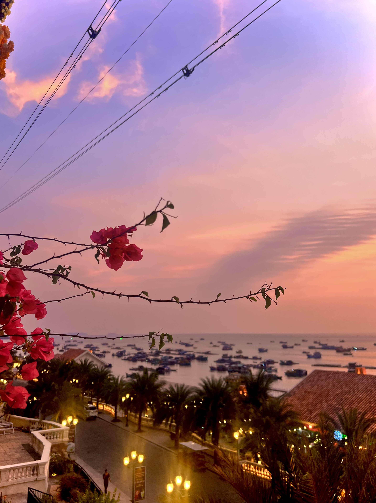
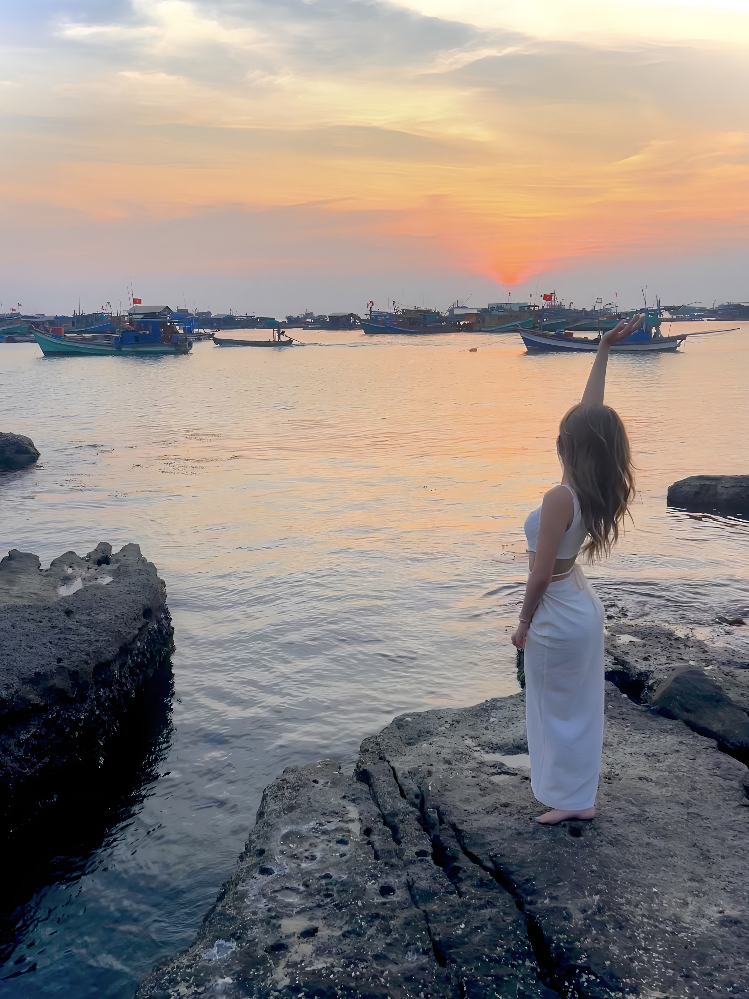
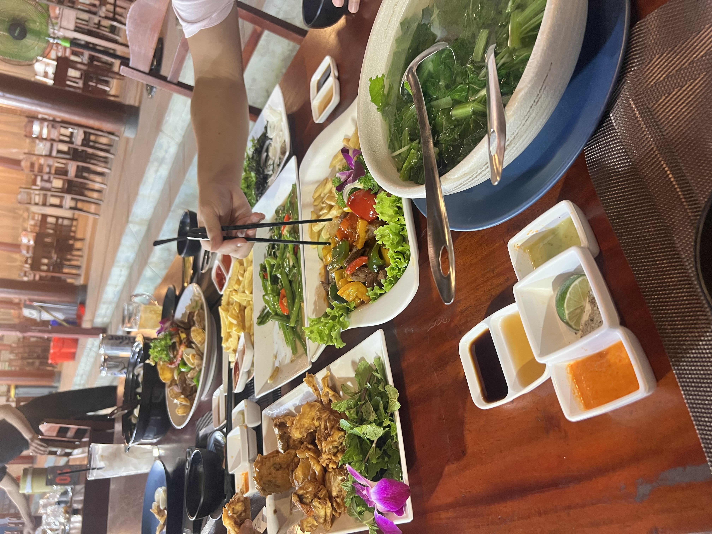
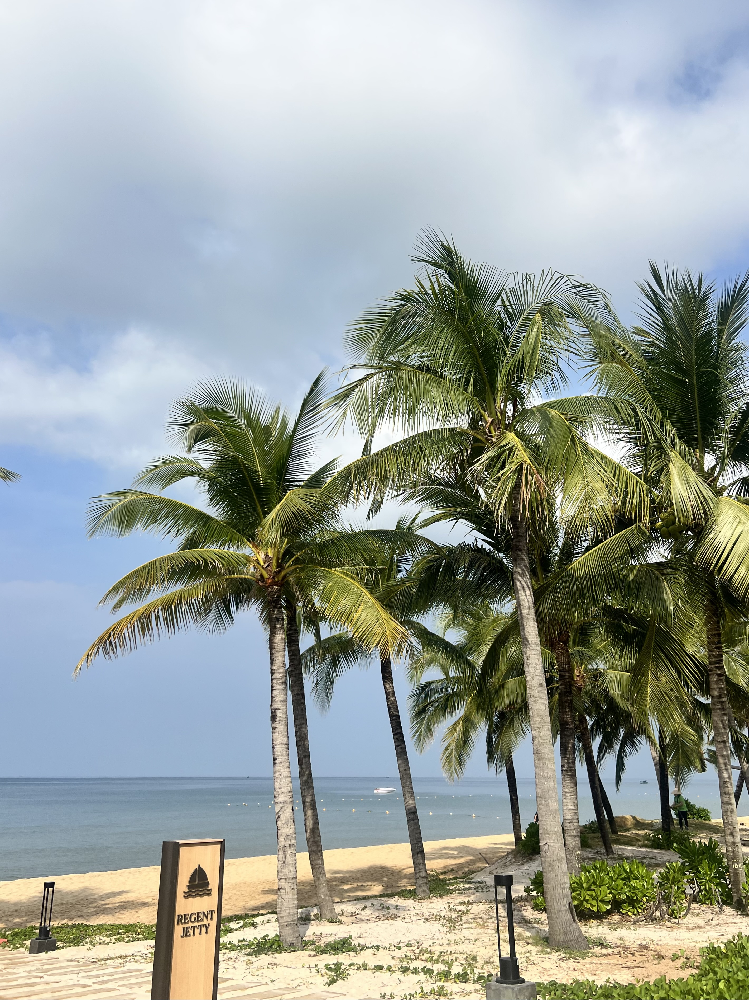
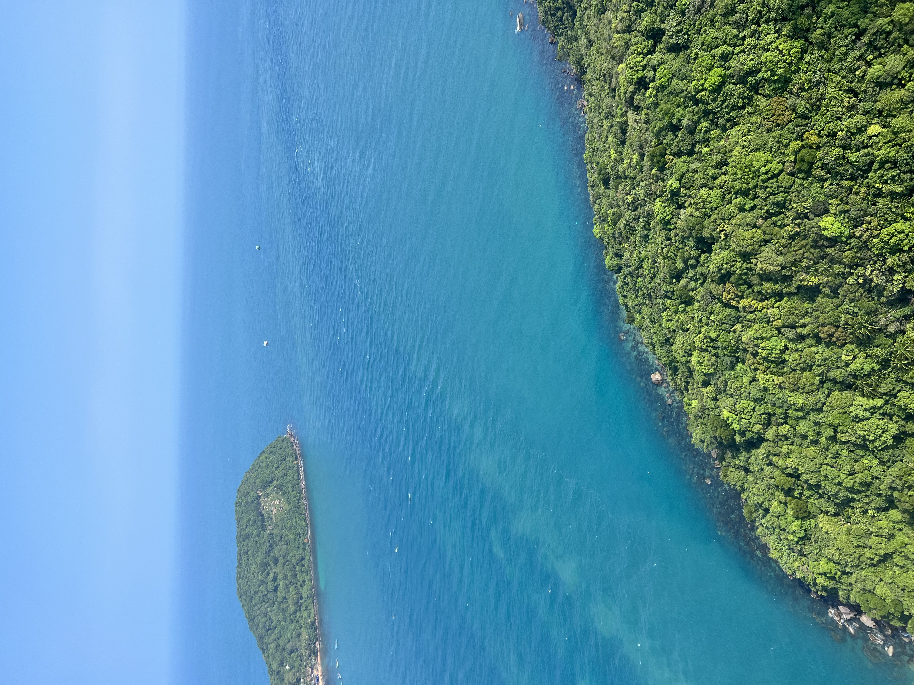
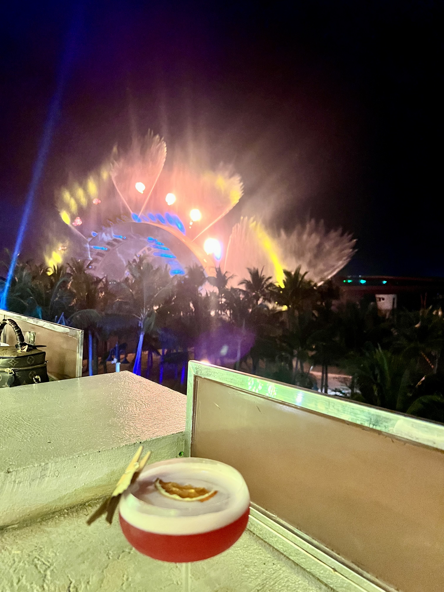
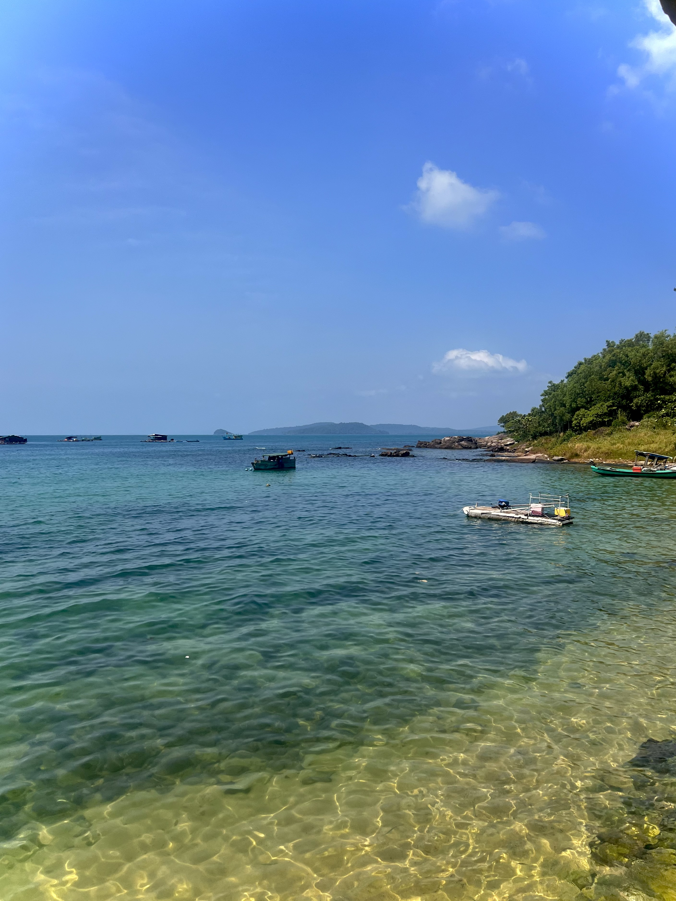

Phu Quoc Travel Guide
Phu Quoc is Vietnam's answer to Thailand's islands—white sand beaches, clear water, fresh seafood, and increasingly overdeveloped resorts. The island has changed dramatically in recent years with massive resort complexes, a new international airport, and a cable car to an amusement park.
Parts feel like Disneyland, but you can still find quiet beaches and authentic fishing villages if you know where to look. Come for the beaches and seafood, rent a motorbike to explore, and set your expectations appropriately. This isn't an undiscovered paradise anymore, but it's still a good beach break in Vietnam.
Where to Stay in Phu Quoc
The island is bigger than you'd think. Where you stay completely changes your experience.
Long Beach (Duong Dong) – the main tourist area on the west coast. This is where most people stay. It's convenient with restaurants, markets, and the night market. Beaches are decent but crowded. Stay here if you want easy access to everything.
Ong Lang Beach – north of Long Beach, quieter with boutique resorts and less development. The beach is prettier and less crowded. You'll need a motorbike or Grab to get to town. This is where I prefer to stay.
Sao Beach area (southeast) – home to the island's most famous white sand beach. Resorts here are more isolated. You're far from Duong Dong town but close to the best beach.
North island – very quiet with budget bungalows and almost no development. Beautiful but isolated—bring motorbike confidence.
Vinpearl/An Thoi – massive resort complexes in the south with their own everything. Stay here if you never want to leave the resort. I'd skip it.
Budget – simple beachfront bungalows start at $20-30. Mid-range resorts with pools cost $60-100. Luxury resorts are $200+.


Where to Eat
Seafood is the main draw. You'll eat a lot of grilled fish, squid, and shellfish. Quality varies—avoid obvious tourist traps near the night market.
Night Market – the main one in Duong Dong is extremely touristy with aggressive touts. Prices are inflated and quality is mediocre. But it's an experience. Go once, don't expect authenticity.
Dinh Cau Night Market – slightly less touristy with local seafood restaurants along the harbor. Pick your seafood, they cook it. Prices vary wildly—ask first.
Local spots – Quan 95 serves excellent grilled seafood away from tourist areas. Buddah Belly is good for Western food when you need a break. Rory's Beach Bar has solid food and sunset views.
Pepper farms – Phu Quoc is famous for black pepper. Many farms offer free tours and sell fresh pepper. It makes a good souvenir and actually tastes better than supermarket pepper.
Fish sauce – the island produces Vietnam's best fish sauce. You can tour factories. Don't put bottles in checked luggage.


What to Do
Rent a motorbike – this is essential. The island is too big to walk and Grab isn't always available outside Duong Dong. Rentals cost $5-7 per day. Roads are good and traffic is light. Don't forget your license and helmet.
Sao Beach – the most beautiful beach on the island with powdery white sand and clear water. It's touristy now with many beach clubs charging entrance fees. Go early morning before tour groups arrive.
Snorkeling and diving – the north islands have decent snorkeling. An Thoi islands in the south are better for diving. Don't expect Thailand-level clarity but it's worth a day trip.
Cable car – the world's longest ocean cable car connects to Hon Thom island. It's impressive engineering and offers great views. The island has an amusement park that feels out of place. Go for the views, skip the park.
Sunset – west-facing beaches offer gorgeous sunsets. Ong Lang Beach, Long Beach, and Rory's Beach Bar are all good spots. Sunset happens fast here—be ready by 6pm.
Explore by motorbike – drive the coastal roads, stop at random beaches, visit pepper farms, find quiet fishing villages. The journey is better than the destinations.
What to skip – Vinpearl Safari and VinWonders theme park feel artificial. The prison museum is depressing. Most organized tours are overpriced.


A Few of My Favorite Spots
- Ong Lang Beach for quiet mornings
- Sao Beach before 9am
- Sunset at Rory's Beach Bar
- Motorbike rides on coastal roads
- Dinh Cau Rock Temple at the harbor
- Pepper farms in the interior
- Random empty beaches on the east coast
- Fresh seafood at small local restaurants

Practical Information
Getting there – fly from Hanoi (2.5 hours) or HCMC (1 hour). The new international airport has direct flights from Bangkok, Singapore, and Seoul. Fast ferries connect from Ha Tien and Rach Gia but flights are easier.
Getting around – rent a motorbike. Grab works in Duong Dong but is limited elsewhere. Taxis exist but are expensive. Hotels can arrange car rentals with drivers.
Best time to visit – November to March is dry season with calm seas. April and May are hot but still okay. June to October is wet season with rough seas and some businesses closed. I recommend December to February for best weather.
How long to stay – 3-4 days is enough to see the island and relax. Add more if you're doing a pure beach vacation or island hopping tours.
Money – budget $40-60 per day for mid-range travel including accommodation. Seafood can be expensive if you're not careful. ATMs are common in Duong Dong, less so elsewhere.
Development – the island is changing fast. What I describe here might look different in a year. The north is being developed now. If you want quiet beaches, visit soon.
Realistic expectations – this isn't a pristine untouched island. It's developing rapidly with mixed results. The beaches are nice but not Thailand-level. Come with moderate expectations and you'll enjoy it.